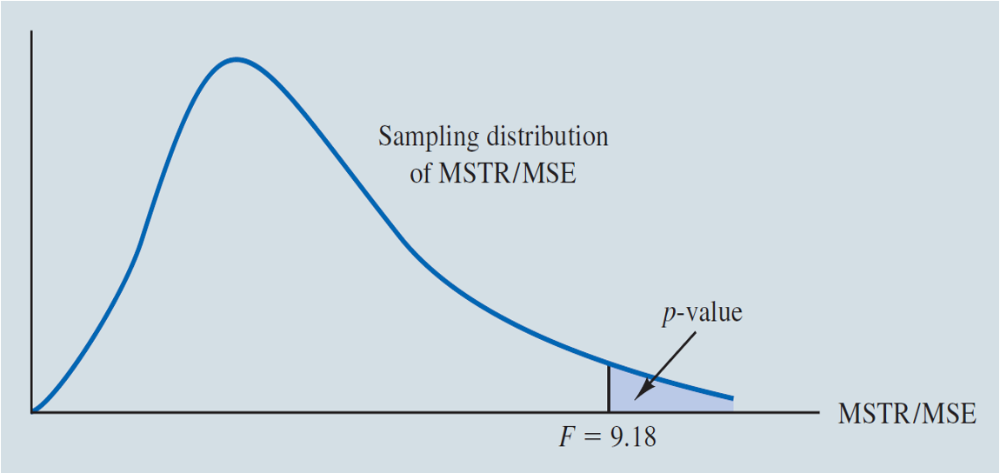
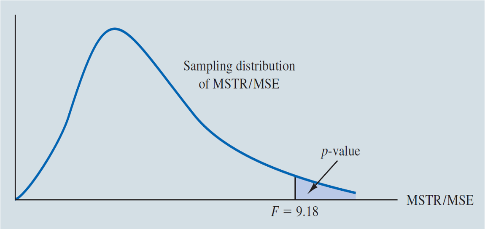
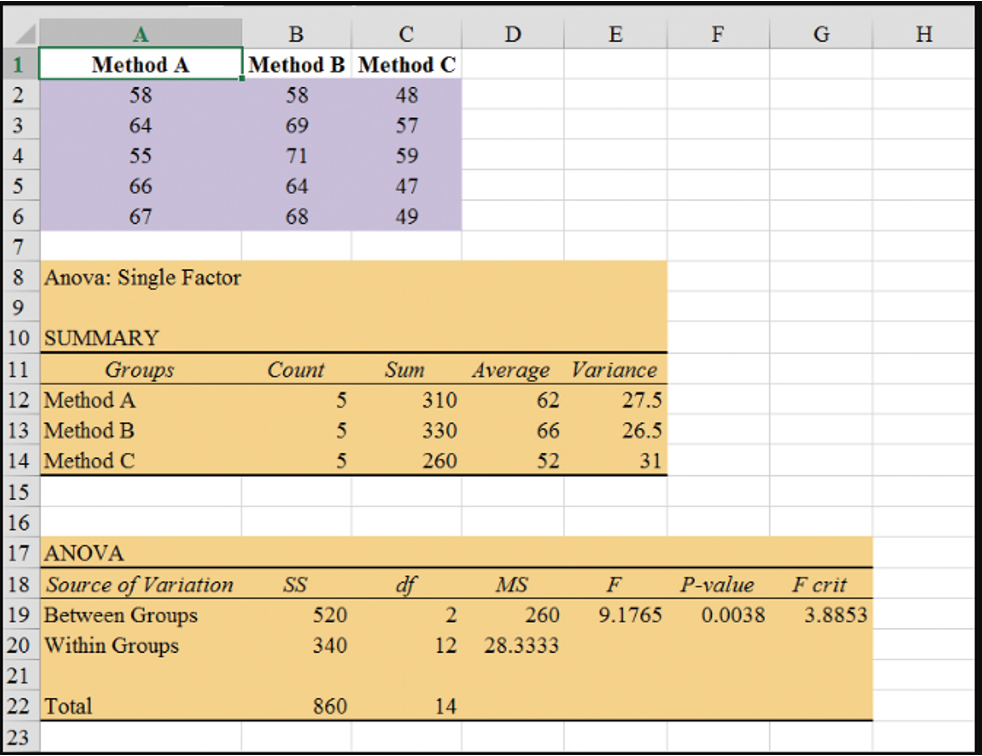

Analysis of Variance (ANOVA)
Chemitech developed a new filtration system for municipal water supplies. There are different methods that can be used to assemble the system.
Chemitech has narrowed down to three methods: A, B, and C and wants to determine which assembly method can produce the greatest mean number of filtration systems per week.
Randomization and Replications
For the purpose, the company randomly selected 15 workers and randomly divided them into 3 groups, and then randomly assigned one of the three treatments to each group 5 of the workers.
| Factor | Assembly method |
|---|---|
| Treatments/Levels/Values | A, B, and C |
| Response | Number of units produced |
| Experimental units | Employees |
Terminology
| Observation | A | B | C |
|---|---|---|---|
| 1 | 58 | 58 | 48 |
| 2 | 64 | 69 | 57 |
| 3 | 55 | 71 | 59 |
| 4 | 66 | 64 | 47 |
| 5 | 67 | 68 | 49 |
| Sample mean \(\bar{x}_j\) | 62 | 66 | 52 |
| Sample variance \(s_j^2\) | 27.5 | 26.5 | 31.0 |
| Sample standard deviation \(s_j\) | 5.244 | 5.148 | 5.568 |
The hypotheses:
\(H_0: \mu_1 = \mu_2 = \mu_3 = ... = \mu_k\)
\(H_a:\) Not all population means are equal.
where,
\((\mu_1, \mu_2, \mu_3, ..., \mu_k\) are mean responses for the \(k\) populations.)
\((k = 3\) for the motivating example.)
For each population:
The response variable is normally distributed.
The mean of \(i\)-th population is \(\mu_i\).
The variance of the response variable is the same for all of the populations; denoted \(\sigma^2\) (unknown).
The observations must be independent.
If the variation of the sample means is large, then not all population means are equal.
There are two types of variation:
Between-treatments variation of sample means (\(\bar{x}_j\)): Variation due to different treatments. (Explained variation)
Within-treatments variation of observations from their respective treatment means (Unexplained variation).
The F Test for \(H_0\) vs \(H_a\):
\[ \text{MSTR} = \frac{\text{Sum of squares due to treatments (SSTR)}}{\text{Degrees of freedom of SSTR}} = \frac{\sum_{j=1}^k n_j(\bar{x}_j - \bar{x})^2}{k - 1} \]
\[ = \frac{5(62 - 60)^2 + 5(66 - 60)^2 + 5(52 - 60)^2}{3 - 1} = \frac{520}{2} = 260 \]
The variation of the sample observations within each sample is called the mean square error (MSE).
A measure of sampling variation.
\[ \text{MSE} = \frac{\text{Sum of squares due to unexplained error (SSE)}}{\text{Degrees of freedom of SSE}} = \frac{\sum_{j=1}^k (n_j - 1) s_j^2}{n_T - k} \]
\[ = \frac{(5-1)(27.5) + (5-1)(26.5) + (5-1)(31)}{15-3} = \frac{340}{12} = 28.33 \]
\((n_T = 15 \text{ is the total sample size.})\)
Test statistic:
Decision rule:
\[ F = \frac{MSTR}{MSE} \]
where \(F_{\alpha, k-1, n_T-k} = \text{F.INV}(1-\alpha, k-1, n_T-k)\).

p-value = 1–F.DIST(9.18,2,12,TRUE) \(\approx\) 0.004
where the critical value \(F_{\alpha}\) is based on an F distribution with \(k-1\) numerator d.f. and \(n_T - k\) denominator d.f.
Conclusion: We have statistically significant evidence that at least one pair of the assembly methods produced different mean numbers of filtration systems per week. The significance level is 5%.
ANOVA can be viewed as the process of partitioning the total sum of squares and the degrees of freedom into their corresponding sources: treatments and error.
Dividing the sum of squares by the appropriate degrees of freedom provides the variance estimates, the \(F\) value, and the \(p\)-value used to test the hypothesis of equal population means.
\[ \text{SST} = \sum_{j=1}^k \sum_{i=1}^{n_j} (x_{ij} - \bar{x})^2 = (n_T - 1) s_x^2 = 860 \]
\[ = \text{SSTR} + \text{SSE} = 520 + 340 \]
\(H_0: \mu_1 = \mu_2 = \mu_3\)
\(H_a:\) Not all the means are equal
| Source of Variation | Sum of Squares | Degrees of Freedom | Mean Square | \(F\) | p-Value |
|---|---|---|---|---|---|
| Treatments | \(SSTR\) | \(df_1\) | \(\text{MSTR}=\frac{\text{SSTR}}{df_1}\) | \(\frac{MSTR}{MSE}\) | \(1-\text{F.DIST}(F, k-1, n_T-k, \text{TRUE})\) |
| Error | \(SSE\) | \(df_2\) | \(\text{MSE}=\frac{\text{SSE}}{df_2}\) | ||
| Total | \(SST=SSTR+SSE\) | \(df_3=df_1+df_2\) |
\(H_0: \mu_1 = \mu_2 = \mu_3\)
\(H_a:\) Not all the means are equal
| Source of Variation | Sum of Squares | Degrees of Freedom | Mean Square | \(F\) | p-Value |
|---|---|---|---|---|---|
| Treatments | \(\sum_{j=1}^k n_j (\bar{x}_j - \bar{x})^2\) | \(k - 1\) | \(\frac{\text{SSTR}}{k - 1}\) | \(\frac{\text{MSTR}}{\text{MSE}}\) | \(1-\text{F.DIST}(F, k-1, n_T-k, \text{TRUE})\) |
| Error | \(\sum_{j=1}^k (n_j - 1) s_j^2\) | \(n_T - k\) | \(\frac{\text{SSE}}{n_T - k}\) | ||
| Total | \(\sum_{j=1}^k \sum_{i=1}^{n_j} (x_{ij} - \bar{x})^2\) | \(n_T - 1\) |
\(H_0: \mu_1 = \mu_2 = \mu_3\)
\(H_a:\) Not all the means are equal
| Source of Variation | Sum of Squares | Degrees of Freedom | Mean Square | \(F\) | p-Value |
|---|---|---|---|---|---|
| Treatments | 520 | 2 | 260.00 | 9.18 | .004 |
| Error | 340 | 12 | 28.33 | ||
| Total | 860 | 14 |
Step 1: Open Assembly.xlsx, and, on Sheet 2, click the Data tab on the Ribbon
Step 2: In the Analysis group, click Data Analysis
Step 3: Choose Anova: Single Factor from the list of Analysis Tools
Step 4: When the Anova: Single Factor dialog box appears: (see details on next slide)
Summary and Output data
Some key takeaways from this session:
Experimental Design: allow for control over variables, enabling the establishment of cause-and-effect relationships.
ANOVA: Is a statistical method used to test for differences in means across multiple groups.
ANOVA Assumptions and Decision Making:
Business Statistics